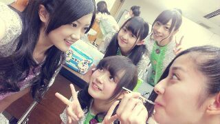

| 2012/10 24 Wed | ひめたん(*>ω<*)そ の220 |

む
何ちゃっかりうしろの2人は
かわゆく決めていらっしゃるのー
この写真を撮るにあたって
いろいろストーリーがあるんだけど
まあー面倒なのではしょります(ω)
あのねー
今ね個握の服悩んでるんだけどね
着ぐるみ買ったの。ワンピも買ったの。
あ着ぐるみって軽いやつね◎
ハロウィンだしね♪
んでもやっぱし握手会で着ぐるみとかさすがに失礼かなーって思って、ワンピにしよかなってなったの。
そしたら、昨日のブログのコメントで
着ぐるみ見てみたいー！って方が
いっぱいいらっしゃって嬉しかったの。
それで、
結局個握でなに着よかなー(´・ω・｀)
これいまのひめたんのお悩みねー
みなさんー
着ぐるみ と ワンピ 、どっちがすきー？
わー極端な質問だなこりゃ(笑)
流し目たん。
カメラマンはるんるんですー＊
今日は質問いっぱいまとめたよ！
みんなありがとーうー///
む
何ちゃっかりうしろの2人は
かわゆく決めていらっしゃるのー
この写真を撮るにあたって
いろいろストーリーがあるんだけど
まあー面倒なのではしょります(ω)
あのねー
今ね個握の服悩んでるんだけどね
着ぐるみ買ったの。ワンピも買ったの。
あ着ぐるみって軽いやつね◎
ハロウィンだしね♪
んでもやっぱし握手会で着ぐるみとかさすがに失礼かなーって思って、ワンピにしよかなってなったの。
そしたら、昨日のブログのコメントで
着ぐるみ見てみたいー！って方が
いっぱいいらっしゃって嬉しかったの。
それで、
結局個握でなに着よかなー(´・ω・｀)
これいまのひめたんのお悩みねー
みなさんー
着ぐるみ と ワンピ 、どっちがすきー？
わー極端な質問だなこりゃ(笑)
流し目たん。
カメラマンはるんるんですー＊
今日は質問いっぱいまとめたよ！
みんなありがとーうー///

 真夏ちゃんとの2ショット撮ってくれる？
真夏ちゃんとの2ショット撮ってくれる？
おけい任せてーっ∩^ω^∩
 乃木坂46のなかで推しメンは？
乃木坂46のなかで推しメンは？
みんな好きだな困ったなあー...
ひめたんはDDやごめんみんな！笑
横浜行きますがHNを名乗った方がいいのかな？
名乗ってくれたら、ああーってなるけど
強制はしないよ＊お任せするー(^^)
最近どうっすか？ｗ
きたあ笑
テストどうだった？
ん、今なんか言った(´・ω・｀)？
スカイツリーに行ったことありますか？
あるよあるよー！
あのたっかい所から見た東京はやばいっ
地元から東京に遊びにきてくれたまりなちょすって子と一緒に行ったんだけど
あーれーはやばいやばいす(*°Д°*)
知り合いが広島に遊びにきたらどこに連れていく？
その子が何をしたいかによるよねっ
おすすめはお台場かひめたん家周辺(^^)
お台場はなんかー行くだけでわくわくするの。東京きたああってなる。
首都高でレインボーブリッジだって通っちゃうからねーやばいやばい///
加茂郡って行った事ある？
行ったことあるっけなあ。
ひめたんは広島県内の地図がいまいちよくわかってないからね(´・ω・｀)
最近よく聴く曲とカラオケの十八番は？
最近よく聴くのは奥華子さん。
カラオケの十八番はAKB48さんのヘビーローテーション♪
ひめたん髪型を変えてみる予定は？
いまは考えてないかなー
なんかいいのあったら提案してして(о´∀`о)
東京は慣れたかな？駅で迷子になっちゃったりして！？
なんかね、電車で2駅の距離を線路に沿って歩いたの。
でちゃんと着いたんだけど、ここまではいいんだけどね
帰りはちょっと冒険してみたいなーって思って、あえて線路じゃなくて道路標識を見て帰ったの！
そしたら見事に迷子になってね←
なんか辺りが暗くなってきたし、怖いし寒いしでもうー寂しさの極み(´;ω;`)
正月は実家に帰ってゆっくりする時間とかあるのかな？もし帰れるなら何したい？
選抜入るまでは広島帰りませーん(^^)！
もし帰れるんなら
小中学校の恩師にあって、
部活の後輩に会って、
第2のマイホームである塾に行って、
時間があればスクールにも行きたい。
さらに時間があればお友達とお泊まりしたいーけど、きっとみんなも忙しいんだろうな(´・ω・｀)
他に行ったことがあるメンバーの家ってある？
お家に遊びに行った事のあるメンバーは？
あいうえお順ね◎
さゆにゃん、みさみさ、川後さん、
ろってぃー、らりん、にゃにゃせ、
ななみん、せいたん、まいまい、
とまと、みゅみゅ(^^)
今までで誰のお家に泊まりに行ったことあるの？誰の家が泊まりやすかった？( ￣▽￣)
お泊まりってなると
川後さん、らりん、にゃにゃせ、
せいたん、とまと、みゅみゅ(^^)
泊まりやすい...誰だろう。
逆に泊まりにくいとかなかったかな笑
みんなのお部屋に個性があって面白いのー♪♪
最近、まあやと仲良くしとるん？
もちろんもちろん！
広島こんび仲良しよ♪
 今このブログを見る前は何してたかな？
今なにしてたー？？
今このブログを見る前は何してたかな？
今なにしてたー？？
(これ読む前)
この質問見る前何してた??
Writing授業どやーっ
夫のみゅうみゅうのお家には行ってないのですか？浮気じゃないのかな？
冬休みとかにみゅみゅのお家遊びに行くーって予約してるから大丈夫。
みさみさはおねえさまだから大丈夫。
そしてみゅみゅも浮気してるから大丈夫
若月は、ひめたんという可愛い嫁が居るのに彼氏や彼女を作って浮気してることについてどう思う？
そーうーそれなのよ！でもね？
お嫁さんはひとりしかいなければ、彼氏さん彼女さんもひとりずつしかいない。
みゅみゅのお嫁さんはひとりしかいないからねー(*>ω<*)
あ、でも、
もひとりお嫁さんいたら妬いちゃう...
続きはまた明日よー＊
(＊´・ω・＊)ひめたん
(＊´・ω・＊)ひめたん
コメント(160)
2012/10/24 23:30